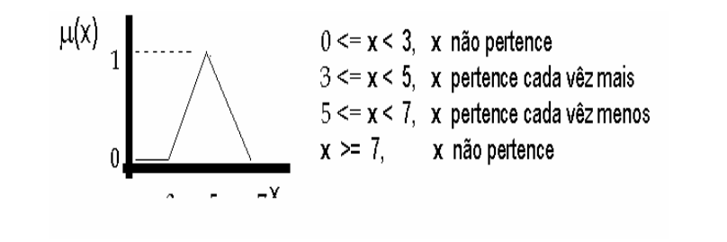

Região Norte
Região Norte
- Acre
- Amazonas
- Roraima
Acre
- Habitantes 829.619
- Área 164 123,737 Km²
- Densidade demográfica 5,05 Hab./Km²
- 22 municípios
Amazonas
- Habitantes 4 063 614
- Área 1 559 146,876 Km²
- Densidade demográfica 2,61 Hab./Km²
- 62 municípios
Roraima
- Habitantes 522 636
- Área 224 300,805 Km²
- Densidade demográfica 2,33 Hab./Km²
- 15 municípios
A urna
Modos
- Votação
- Manutenção/Administração
Modo Votação
- Identificação pelo CPF
- Voto em candidato
Modo Manutenção/Administração
- Manter Candidato
- Consultar voto
- Cadastrar administrador
- Função de multiplicar votos x 1 milhão.
- Gerar relatórios
- Exportação do arquivo com layout padrão
Tecnologias
- Python
- C/C++
- Interface QT5
Python
- Fácil acomplamento com as demais linguagens
- Integração com a interface gráfica
- Fácil manutenção
QT5
- Recursos modernos para interface gráfica
- Portablidade para várias plataformas
- Boas ferramentas para design da interface
C/C++
- Customização da inteface gráfica
- Bibliotecas compartilhadas
- Mostra do algoritmo para lógica fuzzy
- Motor de busca
Lógica Fuzzy
O conceito de lógica Fuzzy, também chamada de lógica Difusa, foi introduzido, em 1965, por Lotfi A. Zadeh
Noções como muito quente e meio frio podem ser formuladas matematicamente, formando os conjuntos Fuzzy e processadas pelos computadores [BNW96]
- Expressa incertezas de maneira mais consistente
- Valores intermediários entre 0 e 1
- Simplifica a aquisição para uma base de conhecimento
- Requer poucas regras, valores e decisões;
Pertinência
Conjuntos Fuzzy
Comparação


Uma pessoa com altura entre 1,50m e 2,00m, possui seu grau de altura (pertinência) variando entre 0,0 e 1,0.
Mecanismo de busca
Fonte: Universidade Estadual de Montes Claros
- Tratamento conjuntos nebulosos
- Aplicação de algoritmos
- Ordenação pela relevância
Relevância
Adaptado de: http://www.bcc.ufla.br/../Proposta_de_uma_maquina_de_busca_eficiente_para_documentos_na_WEB_usando_logica_Fuzzy.pdf
| Nº | Candidato |
|---|---|
| 11 | Maria de souza |
| 10 | maria de sousa |
| 49 | maria da silva |
| 69 | ana maria |